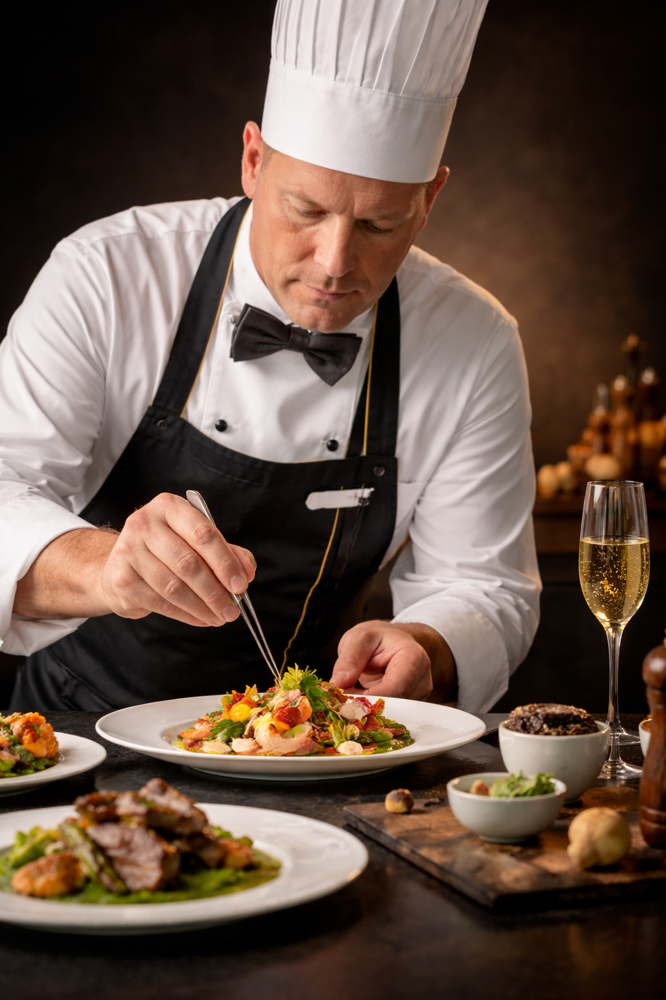
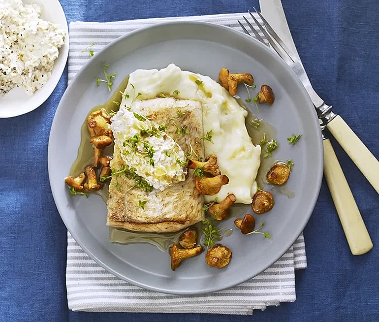
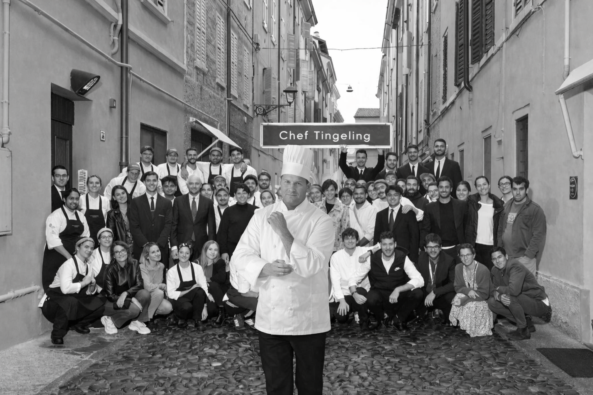

Jag heter Mr. Strid, är 45 år gammal och har ägnat hela mitt liv åt matlagningens konst. Jag har studerat vid de mest prestigefyllda matlagningsskolorna och vann förra året Masterchef i Sverige. Min passion är att utforska nya smaker och tekniker, och att omvandla varje måltid till ett konstverk. "Chef Tingeling" är kulmen på min dröm att dela min kulinariska vision med världen och erbjuda en upplevelse som reflekterar min hängivenhet till perfektion och innovation.




Sedan jag öppnade Chef Tingeling har målet varit detsamma: att ge människor något mer än mat – en upplevelse, en stund av glädje och gemenskap. Varje dag i vårt kök arbetar vi med passion, lokala råvaror och omtanke för detaljerna. Vi vill visa hur mycket man kan skapa med respekt för råvaran och kärlek till hantverket. Tillsammans, med varje tallrik och varje gäst, skapar vi magin som gör Chef Tingeling till något unikt.